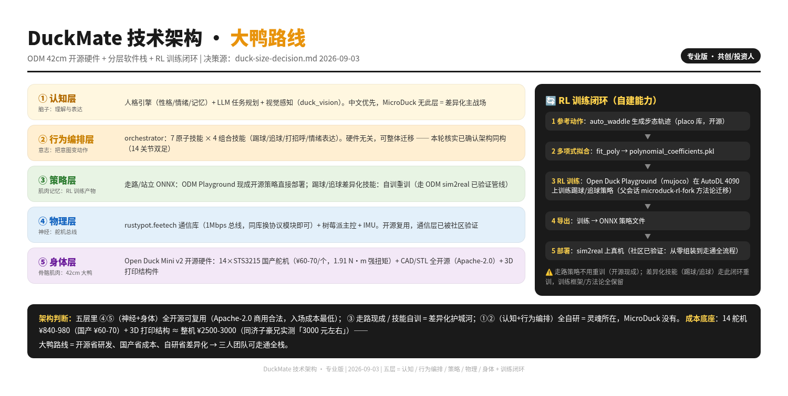
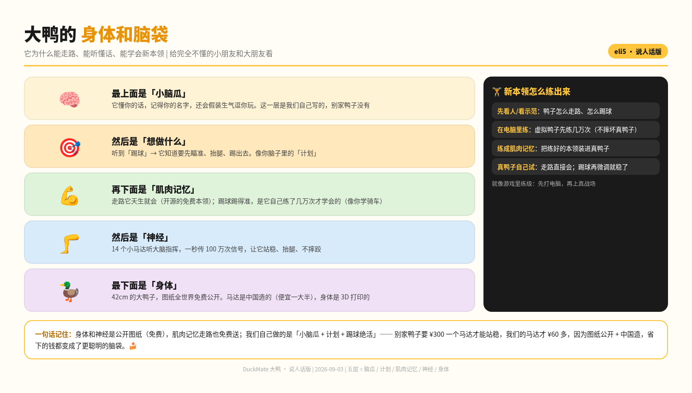

第一性拆解：桌面机器人是「玩具」，不是「AI 原生设备」。消费级双足机器人在中国是空白。
海外 MicroDuck（25cm 开源鸭）$499 预售爆单，Q4 出货。但 25cm 方案进口舵机 15 只 ¥4,500+，做不了中国 C 端（¥1,999-2,599 定价结构性亏损）。
Open Duck Mini v2（42cm，同工程师同源）→ 14 只飞特 STS3215（¥60-70/只）国产化，量产整机 ¥1,500-1,800 目标。尺寸升级 = 扭矩 3 倍 = 能踢球。
RL 训练踢球技能（拳头差异化）、中文 AI 素养教育内容、Apache-2.0 全开源 + 同济教程生态，打样成本趋零，组装路线验证过。
消费机器人的胜利公式 = 平价硬件 × 开源生态 × 社区内容。MicroDuck 已验证，Anki 已证伪（闭源单打，公开报道累计融资超 $2 亿后倒闭）。DuckMate 完全沿胜利公式设计。
MicroDuck $399 预售 2026-08-27 开，爆单至 Shopify UI 限额（官方博客原话，含 HF 联创 Thomas Wolf）。同门 Reachy Mini 已售 10,000+ 台。发布 4 天社区训出翻筋斗/霹雳舞/激光追踪（社区实测）。
MicroDuck 首发仅北美/欧洲/英国，圣诞前发货。中国用户需 ¥3,500+ 税运且 2027 年才到手（官网 FAQ 核验）。42cm 大鸭 = 无官方对手、无复刻量产、中文内容生态刚起步的空白位。
把「社群能自装的套件」升级为「开箱即用的品牌整机 + 内容体系」，正是 MicroDuck 在欧美所做的事的 中国 + 大尺寸版。需求真实且冲动，不凭空造需求。
3 年视角。目标城市中产家庭 3,000 万户 × 3 年渗透 0.1% ≈ 3 万台/年。推算框架，以渠道访谈校准。
极客 + 线上直营 + 机构试探可触达 ≈ 5,000-15,000 台/年。渠道：开源社区冷启动 + 直营。
3,000-5,000 台/年。验证性规模，不为份额叙事融资。真实规模以 M1 预售数据校准。
客户第一性重问：不是「焦虑的家长」（决策慢、红海、品牌冷启动难），而是「冲动买」的极客 + 机构教具需求。但「有需求」≠「能进入」：学校/特教结构性不可进入，不占版面。
| 路径 | 客户 | 证据等级 | 角色 |
|---|---|---|---|
| L1 极客/创客 | 开发者 | ✅✅ 已验证 MicroDuck 爆单 = 这群人；中国真空（税运 ¥3,500+/2027 到手） | 第一战场：验证 + 现金 + 口碑 |
| L2 C 端家庭 | 家长（6-14 岁） | 🟡 待验证 AI 素养是趋势，付费意愿 M1 访谈验证 | 主战场：品牌 + 订阅（内容先行） |
| 机构试探 | 编程机构 | 🟡 推断 需真 AI 教具，3 家免费试用验证 | C 端放大器：机构买 → 家长看到 → C 端转化 |
| 学校 K12 / 特教 | N/A | ❌ 不做 招投标资质/医疗准入/回款 = 上市公司级投入 | 结构性不可进入，明确放弃 |
MicroDuck 8/27 爆单人群就是极客（官方博客一手）。决策快、毛利高、品牌放大器（发烧友 → KOL → 大众）。唯一有现成证据的入口。
中国家庭付费意愿未验证（M1 必测），需内容体系 + 品牌信任长线投入。C 端品牌从极客口碑长出来，比广告便宜。
内容金字塔只承载屏幕给不了的三种具身独有：物理因果、真实责任、身体性惊喜。能上屏幕的内容不上机器人（内容方法论 4 轮审计验证）。
克隆同尺寸 = 正面撞车必输（$399 官方 + 复刻党规模化成本更低）。42cm ODM 与 MicroDuck 是同一位工程师 Antoine Pirrone（Pollen R&D）的作品，站在同源开源上做更大版本，训练方法论一脉相承。
| 维度 | MicroDuck | DuckMate（大鸭） |
|---|---|---|
| 定位 | 开发者/创客玩具（25cm） | 教育（AI 素养）+ 极客双线（42cm） |
| 语言 | 英文 | 中文优先 |
| 内容 | 社区技能 | 内容金字塔四层（人格/互动/学习/创造） |
| 渠道 | 欧美直营 | 中国线上 + 极客社区（教育渠道仅试探） |
| 硬件 | 欧洲供应链（XL330 进口） | 国产供应链（STS3215，成本 -30-50%） |
| 客户 | 单层（创客） | 分层：极客第一战场 → C 端主战场 → 机构试探 |
| 玩家 | 定位 | 价位 | 弱点（我们的机会） |
|---|---|---|---|
| Pollen MicroDuck | 欧美创客 | $399 | 无中国、非教育、硬件闭源迭代慢 |
| 复刻党（fanhao375 等） | 图纸社区 | 无商品 | 无量产、无品牌、无售后 |
| 宇树 | 人形/四足 | ¥数千-数万 | 非玩具价位、非儿童 |
| 教育机器人（积木/轮式） | 编程教育 | ¥500-2,000 | 无双足、无真 RL 策略、红海同质化 |
| Anki（已停） | 闭源玩具 | $180+ | 死亡路径教材：闭源 + 自建内容 |
壁垒构建顺序：供应链成本（友A/B，即刻）→ IP 外观与模具（友B，6 个月）→ 内容金字塔（Sky 方法论 + 12 课素材库，12 个月）→ 社区生态（24 个月）。内容叙事刻意避开「编程」红海词，主打 「AI 素养」：真 AI 双足是唯一能「演」AI 的教具。
数据实测/一手（MJCF 质量总和 / 国内复刻者实购价 / ODM 官方架构），推算项已标注。
| 项目 | 规格 | 说明 |
|---|---|---|
| 身高 / 重量 | 42cm / ~2.1kg | ODM v2 实测（MJCF 质量总和 2107g） |
| 自由度 | 14 舵机 | 双腿 10 + 颈头 4 |
| 舵机 | 飞特 STS3215 × 14 | 国产串行总线舵机，¥60-70/只 （国内复刻者实购双源） |
| 舵机扭矩 | 1.91 N·m（max 2.4） | 3 倍于 25cm 版 XL330，能踢球能拿物 |
| 主控 | 树莓派级 | ODM 官方架构，可国产替代 |
| 电池 | 2S/3S LiPo | 待 M0 确认 |
| 开源协议 | Apache-2.0 | 图纸 / BOM / 训练栈全部公开 |
| 训练栈 | mujoco_playground + JAX | Berkeley Humanoid 血统，150M 全程重训成本 <¥10（预算口径，4090 @14K steps/s） |
| 能力 | 状态 | 交付窗口 |
|---|---|---|
| 站立（RL 训练） | 已训验收·学到站住 | 修复重训 2026-10 |
| 行走（joystick 策略） | 官方已有 | 随整机（自训 fork 修复中） |
| 踢球（差异化技能） | 重训中 | 2027-01 M2 |
| AI 对话 | 架构就绪 | 随整机 |
| 技能市场 | L3 平台 | 2027-03+ |
价值在灵魂，成本在身体。产品大部分价值不在硬件而在软件/内容/IP 层，只有 ⑤ 是硬件。MicroDuck 只做了策略+身体；我们用编排/认知/内容三层把「创客玩具」升级成「家庭 AI 伙伴」。
技能热加载：内容包 = 策略(ONNX) + DSL 行为脚本 + 场景资产，编排层热加载 → 新内容零固件改动，年龄标签（6-8/9-11/12-14）App 过滤，分龄是标签不是三套产品。
迁移路径：MicroDuck 虚拟栈（9 ONNX + orchestrator + 认知层）→ ODM 规格 = 换策略层 + 重训差异技能；编排/认知/内容层全部保留。接口适配即可，迁移工作量 = obs/action 维度映射。
内容边界：能上屏幕的内容不上机器人（否则 = 会动的 iPad）。机器人只承载「具身独有」：物理因果、真实责任、身体性惊喜。
| 环节 | 状态 | 说明 |
|---|---|---|
| 走路策略 | 官方可用 | 官方 joystick 策略现成可用（省预算基线）；自训 fork（Spec#2 自定义 reward）150M 验收学到站住 → 修复重训中，Codex 独立审计 + trace 逐步证据闭环 |
| 技能重训（踢球等） | AutoDL 4090 | microduck-rl-fork 方法论（宽窗验证/失败统计）整体迁移；MicroDuck 系单技能 4096 env 1-2h、$1-2 量级 |
| 训练成本台账 | 纪律沿用 | 每技能记录 GPU 时数/成本，沿用轨 B 纪律 |
| M1 gate 验证 | 已跑·未过 | 150M joystick 验收 0/20（策略稳定站住非行走）→ 质量闸门拦截不签收 → 修复重训中；gate 定义升级：可站可走才算达标 |


DuckMate 凭什么成立：每一张都有实测/一手证据支撑。
ODM 开源 1 年无人做成中国产品。同工程师同源 42cm 方案，组装路线有同济保姆级教程验证，打样成本趋零。
开源生态14 只飞特 STS3215（¥60-70/只）替代进口 XL330（€45.76/个），单台舵机成本 ¥840-980 → 整机 ¥1,500-1,800。
供应链实价拳头差异化。MuJoCo 仿真训练 → ONNX 部署真机，物理因果「说踢球它就踢飞」= 屏幕给不了的具身 AI 教育。
训练轨进行中行为编排层（认知 + 技能库 + 编排器 + 视觉闭环）虚拟鸭栈已 80% 跑通，动作空间与 ODM 1:1 同构，迁移 ≈2-3 天。
编排层就绪3 性格包 + 3 游戏 + 3 课程点。只承载「具身独有」内容：物理因果、真实责任、身体性惊喜，不跟 iPad 抢屏幕课。
Sky 脚本中L3 商业模式预演：技能包/内容包热加载、版本更新、用户上传下载。硬件卖出只是开始，复购靠内容。
2027-03+每个里程碑有 Gate 验收，不过 Gate 不进入下一阶段。资金路径：M0-M2 原型 -¥180 万 → M3 预售回款 → M4 交付。
极客验证 → 家庭普及 → 内容复购。天使轮 ¥300-500 万 / 出让 10-15%（用途细分待 Sky 拍板）。
42cm 开发者版，预售验证中。早鸟 ¥3,999 限 200 台，¥500 意向金可退，编号铭牌 + 共创社群。
AI 素养教育场景：物理因果 + 真实责任 + 身体性惊喜。内容金字塔 3+3+3 随机器交付。
技能包/内容包持续下发，用户可上传技能。硬件毛利 31-42%，复购靠内容生态。
单位经济：量产成本 ¥1,500-1,800 → C 端盈利底线 <¥1,800，毛利 31-42%。融资用途：内容生产 30-40% / 原型量产 30% / 团队运营 20-30% / 打样模具 10%（ODM 开源省 60-70% 打样费）。
支付/资金/产品 16 年 + 供应链实控 + AI 全栈，能力互补无重叠。
前字节 TikTok Shop 支付负责人 / 支付宝余额宝资金管理 / 华为项目财务。16 年支付+资金+产品。
载板/PCBA 设计与量产。M0 已签约意向，三张报价单核心一方。
结构件注塑模具 + 10 台原型组装 + IP 壳（鸭/恐龙/宠物）。M0 已签约意向。
虚拟鸭行为栈（编排/训练/视觉）、训练轨执行、生态监测、全栈文档。能力边界诚实声明。